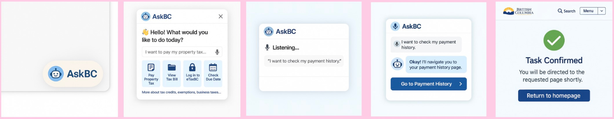
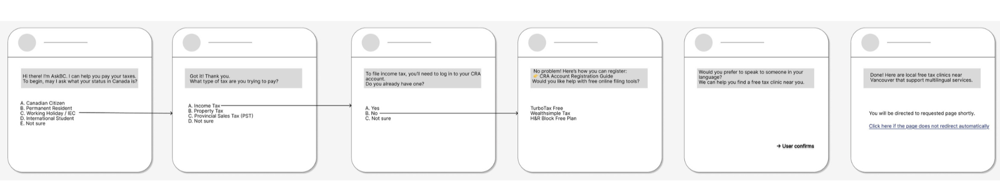
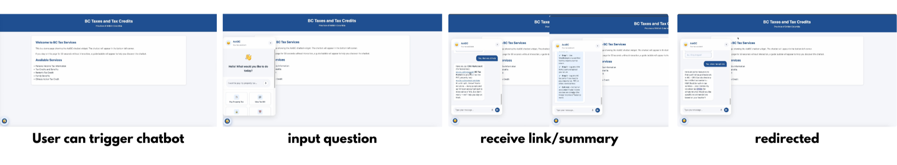
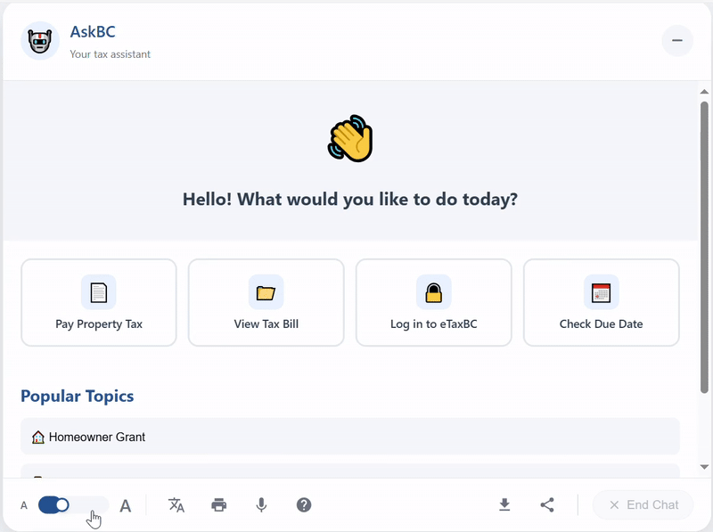
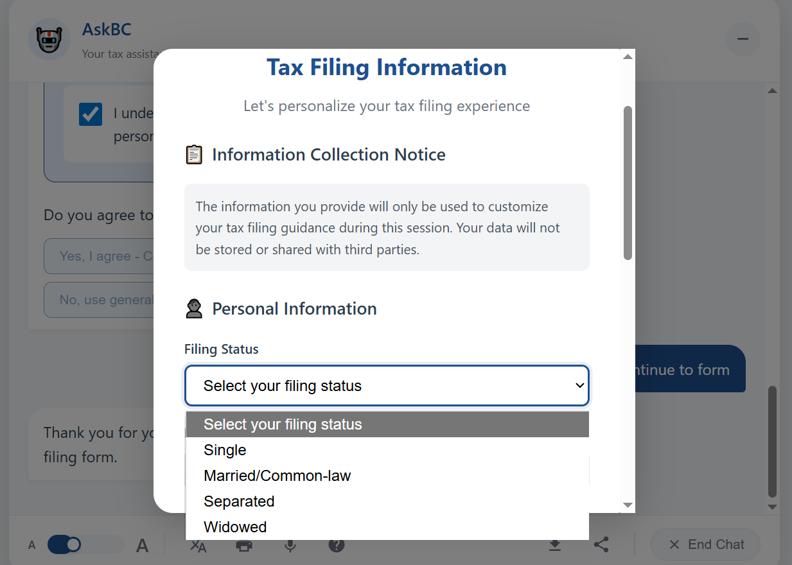
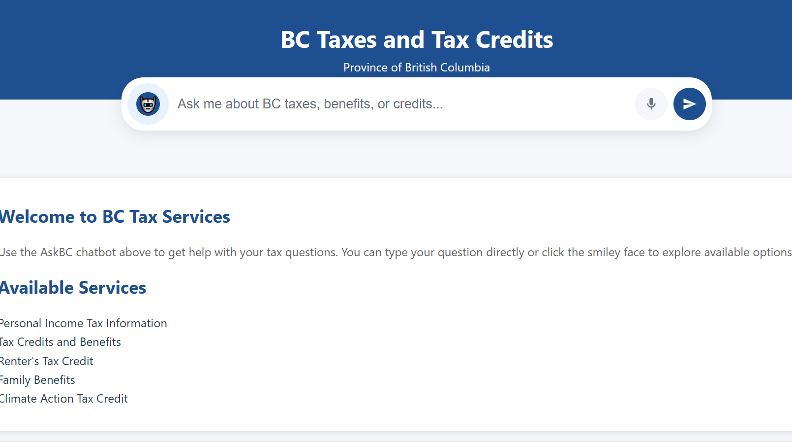
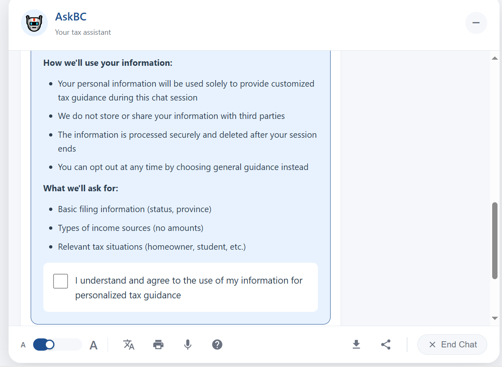

2025
HTML Based Prototype
Figma, HTML, CSS, JavaScript
UX Designer & Researcher, Team Leader
2 Designers, 1 Developer
AskBC is an HTML-based AI chatbot prototype designed for integration into British Columbia's tax and tax credit website. It helps residents quickly locate the information or services they need and provides customized tax-related process guides based on individual user input.
This prototype features a fixed, clickable user flow and is not yet connected to any backend or API services.
Led a cross-functional team and centralized communication, ensuring alignment across design, research, and technical input.
Facilitated critiques, assigned tasks, and tracked progress, keeping the team focused on a clear MVP.
Designed the chatbot flow and logic, based on real user needs and accessibility best practices.
Conducted user research and usability testing, turning insights into actionable design improvements.
Government websites often have dense information and fragmented navigation, making it difficult for users to find the resources they need, especially when dealing with complex tax scenarios.
We aimed to prototype a chatbot that could simplify this experience by guiding users to relevant information based on their specific needs and circumstances.
We conducted user interviews to explore how residents currently navigate BC's tax and tax credit websites, and to understand their overall experience with the province's online tax-related processes.
As team lead, I defined the interview scope and facilitated synthesis sessions to translate user feedback into clear design directions.
| Persona | Experience | Pain Points | Needs |
|---|---|---|---|
| Rita (25) | Has filed taxes independently; familiar with CRA and BC tax systems | Finds current websites fragmented and hard to navigate | Faster, self-guided task flow with clear categories |
| Mr. Wang (60) | Relies on accountant due to language barriers and low confidence | Fear of errors, overwhelmed by too much information | Step-by-step guidance with visual cues and multilingual support |
Users struggle to locate the right pages across multiple tax-related websites, often unsure which agency or section their situation applies to.
Especially for older or lower-digital-literacy users, not knowing whether they're on the right path increases reliance on accountants or external help.
Users prefer step-by-step guidance based on their own status and needs, rather than browsing long lists or generic FAQs.
Users with limited English or digital literacy face difficulties navigating dense interfaces and prefer simplified or multilingual support.
This section explains that the process began with rapid brainstorming to explore conversation flows for tax-related tasks, generating structural options, simulating user intents, and analyzing what worked and what didn't from a user understanding perspective.

This section details that based on user interviews, a persona was developed, and common challenges with online tax tools were mapped. These real-world scenarios were translated into a clickable wireframe in Figma, prioritizing realistic, goal-based tasks (e.g., "I want to pay property tax") over system-based categorization, reflecting a user-centered redesign approach.

This section explains that to support diverse user needs, the chatbot's steps were customized based on user identity (e.g., PR, student, or senior). This helped reduce irrelevant content and created a more efficient, confidence-building experience.

We conducted usability testing with three older adult participants (60+) representing BC tax service users, covering general browsing, direct inquiries, and step-by-step tax guidance. Sessions were held remotely via screen sharing.
Users found the default text too small and hard to read.
Increased font size across the chatbot to improve readability and accessibility.


Users disliked being asked what kind of tax they needed to pay; they expected the system to tell them based on basic input.
Reframed the chatbot to begin with data collection ("age, status, property") and offer a customized list of steps.
Users overlooked the chatbot icon placed in the lower-left corner and did not associate it with the site's main search or help function.
Moved the chatbot icon into the main search bar area to increase visibility, improve discoverability, and reinforce its role as a guided search tool.


Concern about data security and whether results were accurate or official.
Included reassuring system messages like “Based on 2024 BC regulations” and clarified that no data is stored.
Download available via Google Drive — HTML prototype file.